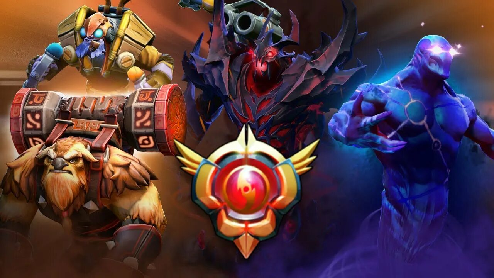

Герои Dota 2
В Dota 2 огромный выбор персонажей, и каждый герой обладает своими способностями, стилем игры и ролью в команде.
Carry
Support
Mid
Offlane
Вернуться на главную

На странице героев можно увидеть популярных персоажей и советы по выбору героя в игре.
Популярные герои
Juggernaut
Универсальный carry с сильным уроном и хорошей выживаемостью.
Crystal Maiden
Полезный support, который помогает команде контролем и маной.
Axe
Сильный инициатор, который хорошо начинает командные драки.
Как выбрать героя
Для новичка
Лучше начать с простых героев с понятными способностями и небольшой сложностью.
По роли
Сначала выбери, хочешь ли ты наносить урон, помогать команде или инициировать драки.
По стилю игры
Кому-то нравится активная игра, а кому-то — спокойный фарм и поздняя сила.
По команде
Хороший выбор героя зависит не только от тебя, но и от состава союзников и врагов.